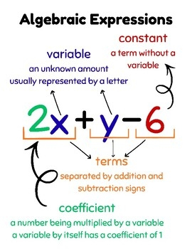
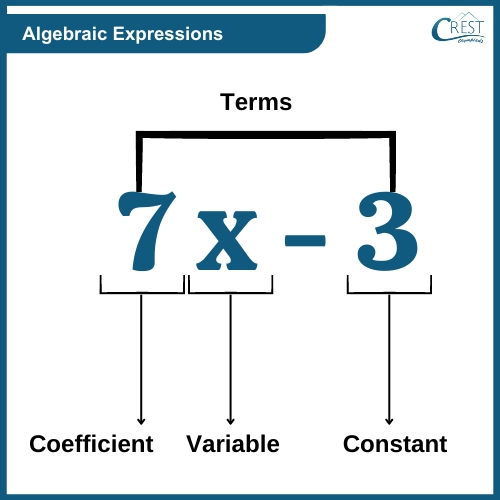
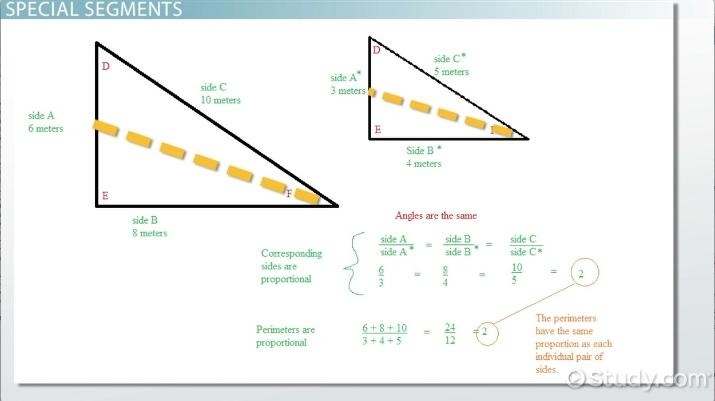
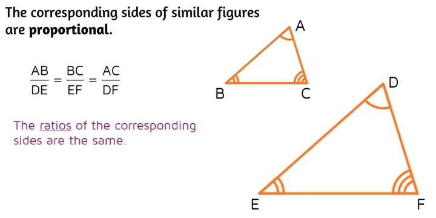
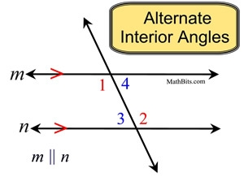
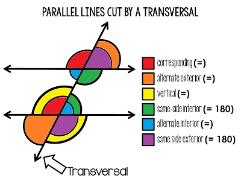
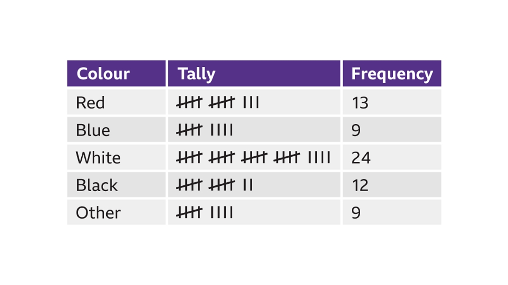
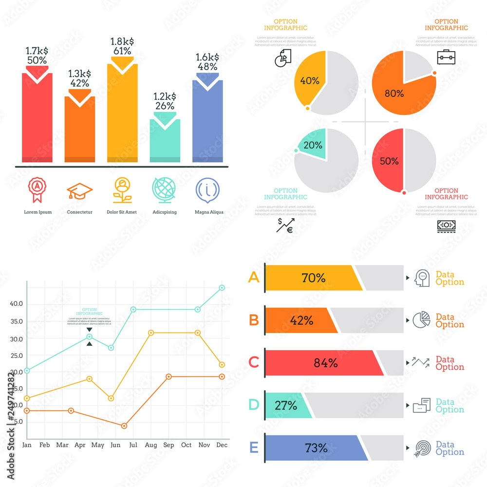
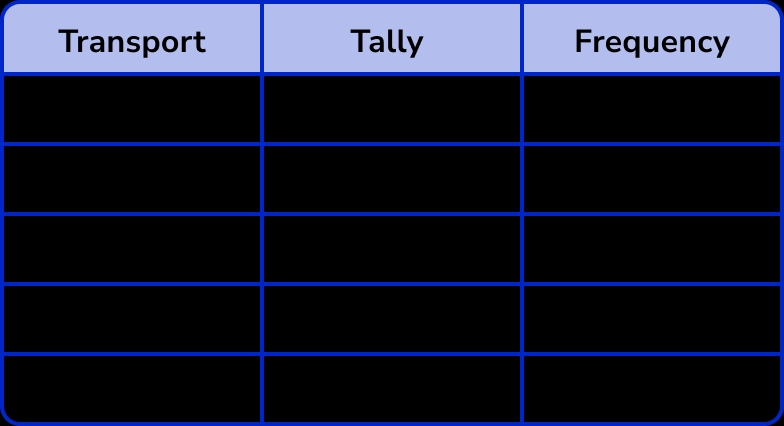

Progres Belajar
🧮 Pengenalan Aljabar
Aljabar adalah cabang matematika yang menggunakan simbol (biasanya huruf) untuk mewakili bilangan dan besaran dalam persamaan dan rumus. Aljabar membantu kita menyelesaikan masalah di mana beberapa nilai tidak diketahui.
Mengapa Kita Perlu Aljabar?
- Untuk menyelesaikan nilai yang tidak diketahui dalam situasi kehidupan nyata
- Untuk memahami pola dan hubungan antar bilangan
- Untuk mempersiapkan matematika dan sains yang lebih tinggi
Variabel dan Konstanta
Variabel: Simbol (seperti x, y, a) yang mewakili bilangan yang tidak diketahui. Nilainya dapat berubah.
Konstanta: Bilangan tetap yang tidak berubah (seperti 5, -3, ½).

📷 Gambar: Bagian-bagian ekspresi aljabar - koefisien, variabel, konstanta, dan suku

📷 Gambar: Contoh ekspresi 7x - 3 dengan label koefisien, variabel, dan konstanta
Contoh 1: Mengidentifikasi Bagian
Dalam ekspresi 3x + 7:
- 3 adalah koefisien (bilangan yang dikalikan dengan variabel)
- x adalah variabel
- 7 adalah konstanta
Persamaan Linear Satu Variabel
Persamaan linear satu variabel dapat ditulis dalam bentuk:
Di mana a, b, dan c adalah konstanta, dan x adalah variabel yang harus kita cari.
Langkah-langkah Menyelesaikan:
- Sederhanakan kedua ruas (hilangkan tanda kurung, gabungkan suku sejenis)
- Pindahkan suku variabel ke satu ruas dan konstanta ke ruas lain
- Isolasi variabel dengan membagi dengan koefisiennya
- Periksa jawabanmu dengan mensubstitusikan kembali ke persamaan awal
Contoh 2: Selesaikan x
Soal: 2x + 5 = 13
Langkah 1: Kurangi 5 dari kedua ruas
2x + 5 - 5 = 13 - 5
2x = 8
Langkah 2: Bagi kedua ruas dengan 2
x = 4
Cek: 2(4) + 5 = 8 + 5 = 13 ✓
Contoh 3: Variabel di Kedua Ruas
Soal: 3x - 7 = x + 5
Langkah 1: Kurangi x dari kedua ruas
3x - x - 7 = 5
2x - 7 = 5
Langkah 2: Tambah 7 ke kedua ruas
2x = 12
Langkah 3: Bagi dengan 2
x = 6
Cek: 3(6) - 7 = 11 dan 6 + 5 = 11 ✓
Ekspresi Aljabar
Ekspresi aljabar adalah kombinasi variabel, konstanta, dan operasi (penjumlahan, pengurangan, perkalian, pembagian).
Jenis-jenis Ekspresi Aljabar:
| Jenis | Definisi | Contoh |
|---|---|---|
| Suku Tunggal (Monomial) | Satu suku | 5x, -3y², 7 |
| Dua Suku (Binomial) | Dua suku | x + 3, 2a - 5b |
| Tiga Suku (Trinomial) | Tiga suku | x² + 2x + 1 |
| Banyak Suku (Polinomial) | Banyak suku | 3x³ - 2x² + x - 7 |
Contoh 4: Menyederhanakan Ekspresi
Soal: Sederhanakan 3x + 2y - x + 4y
Gabungkan suku sejenis (suku dengan variabel yang sama):
(3x - x) + (2y + 4y) = 2x + 6y
🎯 Latihan Cepat
Selesaikan: 4x - 3 = 9
Progres Belajar
📐 Kesebangunan dan Kongruensi
Dua bangun dikatakan sebangun (similar) jika memiliki bentuk yang sama tetapi tidak harus ukuran yang sama. Dua bangun dikatakan kongruen jika memiliki bentuk dan ukuran yang persis sama.
Syarat Kesebangunan (ΔABC ~ ΔDEF):
- Sudut-sudut yang bersesuaian sama besar: ∠A = ∠D, ∠B = ∠E, ∠C = ∠F
- Sisi-sisi yang bersesuaian sebanding: AB/DE = BC/EF = AC/DF = k (faktor skala)

📷 Gambar: Dua segitiga sebangun dengan sisi 6m,8m,10m dan 3m,4m,5m (faktor skala 2)

📷 Gambar: Segitiga ABC dan DEF dengan sudut bersesuaian dan sisi sebanding
Jenis-jenis Kesebangunan pada Segitiga
1. Kesebangunan Sudut-Sudut (AA)
Jika dua sudut pada satu segitiga sama dengan dua sudut pada segitiga lain, maka kedua segitiga tersebut sebangun.
Contoh: Kesebangunan AA
Pada ΔABC dan ΔDEF:
∠A = 50°, ∠B = 60° → ∠C = 70°
∠D = 50°, ∠E = 60° → ∠F = 70°
Kesimpulan: ΔABC ~ ΔDEF (kesebangunan AA)
2. Kesebangunan Sisi-Sudut-Sisi (SAS)
Jika dua sisi pada satu segitiga sebanding dengan dua sisi pada segitiga lain, dan sudut yang diapit sama besar, maka kedua segitiga sebangun.
3. Kesebangunan Sisi-Sisi-Sisi (SSS)
Jika ketiga sisi pada satu segitiga sebanding dengan sisi-sisi yang bersesuaian pada segitiga lain, maka kedua segitiga sebangun.
Hubungan Antar Sudut
Memahami bagaimana sudut-sudut saling berhubungan adalah dasar dari geometri.
1. Sudut Berpelurus (Complementary)
Dua sudut dikatakan berpelurus jika jumlahnya sama dengan 90°.
2. Sudut Berpenyiku (Supplementary)
Dua sudut dikatakan berpenyiku jika jumlahnya sama dengan 180°.
3. Sudut Berhadapan (Vertically Opposite)
Ketika dua garis berpotongan, sudut-sudut yang saling berhadapan sama besar.
Sudut yang Terbentuk oleh Dua Garis Sejajar dan Garis Potong
Ketika sebuah garis potong (transversal) memotong dua garis sejajar, beberapa pasangan sudut khusus terbentuk:
| Pasangan Sudut | Hubungan | Contoh |
|---|---|---|
| Sudut Sehadap (Corresponding) | Sama besar (∠1 = ∠5) | Kiri atas pada setiap perpotongan |
| Sudut Dalam Berseberangan (Alternate Interior) | Sama besar (∠3 = ∠6) | Di dalam, sisi berlawanan |
| Sudut Luar Berseberangan (Alternate Exterior) | Sama besar (∠1 = ∠8) | Di luar, sisi berlawanan |
| Sudut Dalam Sepihak (Consecutive Interior) | Berpenyiku (∠3 + ∠5 = 180°) | Di dalam, sisi sama |

📷 Gambar: Sudut dalam berseberangan (alternate interior angles) dengan garis m || n

📷 Gambar: Diagram lengkap 8 sudut dengan warna berbeda untuk corresponding, alternate, same-side interior
Contoh: Mencari Sudut yang Tidak Diketahui
Dua garis sejajar dipotong oleh garis transversal. Jika salah satu sudut sehadat besarnya 70°, tentukan semua sudut lainnya.
Diketahui: Sudut sehadap = 70°
- Sudut sehadat: 70° (keempatnya)
- Sudut berhadapan: 70°
- Sudut berpenyiku: 180° - 70° = 110°
- Sudut dalam berseberangan: 70°
- Sudut dalam sepihak: 110°
Jawaban: Sudut-sudutnya adalah 70° dan 110° yang saling bergantian di sekitar perpotongan.
Faktor Skala dan Perbandingan
Faktor skala (k) adalah perbandingan sisi-sisi yang bersesuaian pada bangun yang sebangun.
Contoh: Menggunakan Faktor Skala
ΔABC memiliki sisi 3cm, 4cm, 5cm. ΔDEF sebangun dengan faktor skala k = 2.
Tentukan panjang sisi-sisi ΔDEF.
Kalikan setiap sisi dengan faktor skala:
DE = 3 × 2 = 6 cm
EF = 4 × 2 = 8 cm
DF = 5 × 2 = 10 cm
🎯 Latihan Cepat
Dua sudut berpenyiku. Salah satu sudut besarnya 125°. Berapakah besar sudut lainnya?
Progres Belajar
📊 Pengenalan Statistika
Statistika adalah ilmu yang mempelajari cara mengumpulkan, mengorganisir, menganalisis, dan menginterpretasikan data. Statistika membantu kita memahami informasi dan menarik kesimpulan yang bermakna.
Mengapa Statistika Penting:
- Membuat keputusan yang tepat berdasarkan data
- Memahami tren dan pola
- Memprediksi hasil di masa depan
- Membandingkan kelompok atau situasi yang berbeda
Pengumpulan dan Penyajian Data
Jenis-jenis Data:
- Kualitatif (Kategorikal): Data deskriptif (warna, nama, kategori)
- Kuantitatif (Numerikal): Data berupa angka yang dapat diukur atau dihitung
- Diskrit: Nilai yang dapat dihitung (jumlah siswa, ukuran sepatu)
- Kontinu: Nilai yang dapat diukur (tinggi, berat, suhu)
Tabel Frekuensi
Tabel frekuensi menunjukkan seberapa sering setiap nilai muncul dalam kumpulan data.

📷 Gambar: Tabel frekuensi dengan tally marks (warna, garis, frekuensi)

📷 Gambar: Template tabel tally untuk pengumpulan data
Contoh: Membuat Tabel Frekuensi
Data: 5, 3, 7, 5, 2, 3, 5, 7, 5, 3
| Nilai (x) | Tally (Garis) | Frekuensi (f) |
|---|---|---|
| 2 | | | 1 |
| 3 | ||| | 3 |
| 5 | |||| | 4 |
| 7 | || | 2 |
| Total | 10 | |
Ukuran Pemusatan Data
Nilai-nilai ini mewakili "pusat" atau nilai tipikal dari kumpulan data.
1. Mean (Rata-rata)
Jumlah semua nilai dibagi dengan banyaknya nilai.
2. Median (Nilai Tengah)
Nilai tengah ketika data diurutkan. Jika jumlah data genap, median adalah rata-rata dari dua nilai tengah.
3. Modus (Nilai yang Sering Muncul)
Nilai yang paling sering muncul dalam kumpulan data. Sebuah data dapat tidak memiliki modus, memiliki satu modus, atau beberapa modus.
Contoh: Mencari Mean, Median, dan Modus
Data: 4, 7, 2, 9, 5, 7, 3
Mean: (4+7+2+9+5+7+3) / 7 = 37 / 7 ≈ 5,29
Median: Data terurut: 2, 3, 4, 5, 7, 7, 9
Nilai tengah (ke-4) = 5
Modus: 7 muncul dua kali (paling sering) = 7
Visualisasi Data
Diagram Batang (Bar Chart)
Digunakan untuk membandingkan kuantitas antar kategori yang berbeda. Batang dapat vertikal atau horizontal.
Grafik Garis (Line Graph)
Digunakan untuk menunjukkan tren dari waktu ke waktu. Titik-titik dihubungkan dengan garis untuk menunjukkan perubahan berkelanjutan.
Diagram Lingkaran (Pie Chart)
Digunakan untuk menunjukkan bagian dari keseluruhan. Setiap "iris" mewakili proporsi dari total (100%).

📷 Gambar: Koleksi diagram batang, grafik garis, dan diagram lingkaran untuk visualisasi data
📷 Gambar: Diagram batang dan pie chart 3D berwarna-warni
Contoh: Membuat Diagram Lingkaran
Survei 40 siswa tentang buah favorit:
- Apel: 10 siswa
- Pisang: 15 siswa
- Jeruk: 8 siswa
- Anggur: 7 siswa
Apel: (10/40) × 360° = 90°
Pisang: (15/40) × 360° = 135°
Jeruk: (8/40) × 360° = 72°
Anggur: (7/40) × 360° = 63°
Cek: 90 + 135 + 72 + 63 = 360° ✓
Jangkauan (Range) dan Penyebaran Data
Jangkauan (Range) menunjukkan seberapa menyebar data tersebut. Ini adalah ukuran penyebaran yang paling sederhana.
Contoh: Menghitung Jangkauan
Nilai ulangan: 65, 78, 82, 91, 55, 88, 76
Tertinggi = 91, Terendah = 55
Range = 91 - 55 = 36
🎯 Latihan Cepat
Tentukan median dari: 12, 18, 5, 22, 9, 15, 11